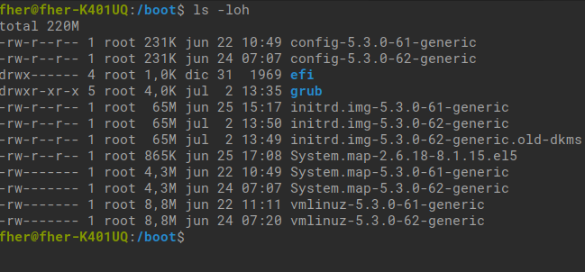
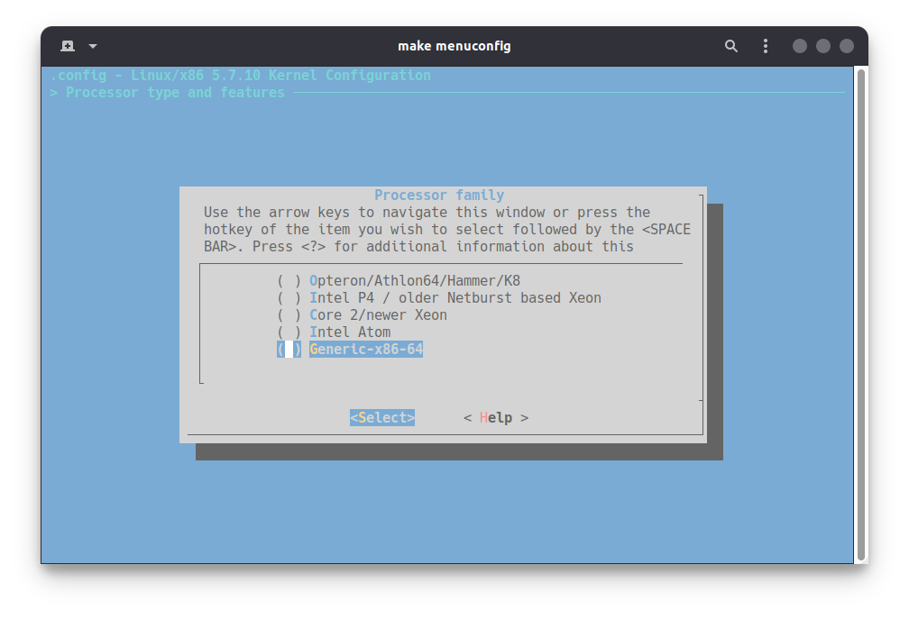

El kernel es un componente esencial dentro del sistema operativo ya que se encarga de realizar las interacciones entre el sistema operativo y el hardware, entre otras cosas necesarias para el funcionamiento del sistema operativo. Saber configurar el kernel y compilarlo puede brindar beneficios dentro del rendimiento del equipo.
El kernel o núcleo es una pieza fundamental dentro del sistema operativo, ya que este es el encargado de gestionar el hardware y es la pieza fundamental de todo S.O.
Dentro de los sistemas operativos basados en UNIX que son libres o de código abierto, se tiene acceso al código fuente del kernel, por lo que el usuario puede realizar modificaciones dentro de este, algunos ejemplos son; los kernel de los *BSD, Hurd y Linux, entre otros así como en otros proyectos que no son UNIX.
Compilar el kernel brinda diferentes beneficios, como menor tamaño y mejor rendimiento, entre otros beneficios dependiendo de la configuración, por lo que proporciona una gran ventaja a diferencia de los kernel de sistemas como Windows, ya que estos son compilados de una manera genérica para que una gran cantidad de dispositivos sean capaces de soportarlo.
Compilar el kernel no es una tarea complicada, ya que no es necesario saber programar, únicamente se requiere crear los binarios a partir del código que ya fue programado por alguien mas. Solo es necesario ejecutar una serie de programas (instrucciones) para tener los componentes necesarios para un núcleo funcional.
Para lograr realizar dicha tarea es necesario tener un conjunto de paquetes instalados dentro de la distribución GNU/Linux que se esté utilizando, también es necesario contar con el código fuente del kernel y de manera opcional una serie de parches para poder optimizar aún más el kernel para el procesador que se esté usando.
Requisitos:
*Los requisitos marcados con asterisco [ * ] son opcionales.
Para poder empezar con la compilación es necesario tener insataladas las dependencias, ya que brindan las herramientas necesarias para empezar con el proceso. Ya que muchas distribuciones no las incluyen, es necesario instalarlas.
El proceso de instalación depende de la distribución que se esté utilizando débido a que cada distro cuenta con su propio gestor de paquetes.
Debian/Ubuntu y derivadas (deb)
$ apt-get install build-essential dpkg-dev git libncurses5-dev bc cpio flex kmod bison flex libssl-dev libelf-dev
Fedora y sistemas que usen dnf (Fedora)
$ dnf group install "Development Tools"
$ dnf install ncurses-devel bison flex git elfutils-libelf-devel openssl-devel
Sistemas que usen yum (CentOS, RHEL)
$ yum group install "Development Tools"
$ yum install ncurses-devel bison flex git elfutils-libelf-devel openssl-devel
Sistemas basados en Arch
$ pacman -S base-devel bc python git bison bc
En distribuciones como Gentoo o que sean similares ya están incluidas estas dependencias. La mayoría de sistemas cuentan con esos paquetes, solo es cuestión de saber el nombre, ya que algunas deciden cambiar el nombre de los paquetes.
Después de instalar las dependencias necesarias, es hora de descargar el código fuente del kernel, para ello es necesario ir a la página oficial del núcleo de Linux.
El sitio oficial de Linux no es la única fuente de la cual se puede obtener el kernel, existen diferentes proyectos que se dedican a modificar el núcleo con diferentes propósitos como lo es obtener mayor rendimiento del sistema o simplemente para hacerlo más seguro.
En las páginas de los núcleos anteriores brindan paquetes precompilados para "distros" basadas en Debian, aunque también parches o el código fuente del kernel con los parches ya aplicados (se encuentran comprimidos o en su respectivo repo. de GitHub).
El kernel requiere un archivo .config (a la hora de compilar), este archivo es el que indica que drivers, módulos y configuraciones son los que se van a compilar.
Para obtener este archivo existen dos métodos, el primero es crearlo con
make menuconfig
Y hacerlo de manera personalizada, pero es un tema extenso debido a que depende demasiado del hardware, por lo que si se busca un kernel completo, es recomendable usar la configuración actual usando la configuración que ya usa la distribución.
El archivo se puede encontrar en diferentes ubicaciones dependiendo de la distribución.
En sistemas como Ubuntu puede encontrarse en el directorio /boot
En este caso inicia con config-* por lo que únicamente es necesario copiar alguno de esos archivos, recomendablemente que sea la versión más reciente.
Por otro lado en la mayoría de distribuciones se encuentra de manera comprimida en /proc esta configuración es la del kernel que actual (el que se está ejecutando).
Se hablará con más detalle de esto en la preparación de la compilación.
Existen diferentes parches para optimizar el kernel, ya sea agregando funciones que no están en versiones oficiales por diferentes motivos o configuraciones especiales.
Cuando se suele compilar el kernel hay una opción que permite al compilador generar código optimizado para el procesador y tener más rendimiento. Las opciones que brinda la configuración son muy reducidas. opcional
Como se puede apreciar, las optimizaciones para el procesador están muy límitadas. Cuando se compila un programa por lo general el compilador suele crear binarios con una serie de instrucciones génericas para que puedan ser utilizadas para la mayoría de procesadores sin importar que sean Intel o AMD. Al usarse instrucciones genéricas no se aprovecha completamente el procesador.
Con el parche a continuación se incluyen más opciones para utilizar instrucciones más específicas para procesadores más recientes, por lo que, el tener un kernel con las instrucciones específicas permite que el núcleo tenga un mayor rendimiento y pueda aprovechar de mejor manera el procesador.
Para descargar el parche es necesario ir a la página de GitHub del proyecto y clonar el repositorio completo con git.
$ git clone https://github.com/graysky2/kernel_gcc_patch.git
*De igual forma, esto se hará en la parte de compilación.
Modprobed-db es completamente opcional, este programa permite registrar de manera continua los modulos que se están utilizando, esto con la finalidad de únicamente compilar los módulos necesarios y evitar compilar componentes que nunca se utilizarán.
A pesar de que el proyecto esté mantenido principalmente para Arch Linux, está disponible también para otras plataformas.
Dentro de esta guía no se hablará más del uso de esta herramienta ya que es muy especifíca y además no se hablará de la configuración del kernel, únicamente de su compilación.
Una vez que se cuente con las dependencias necesarias y el kernel, se puede empezar a preparar el entorno para empezar a compilar.
A partir de este momento puede variar la forma de compilar, ya que las distribuciones que usen paquetes .deb o .rpm brindan la posibilidad de crear paquetes, así como Gentoo brinda una herramienta especializada en la compilación del kernel.
Esta forma de compilación funciona en cualquier distro y no depende de ningún gestor de paquetes.
Una vez que se haya descargado el paquete del kernel, es recomendable tener una carpeta para tener todo de manera más ordenada.
$ mkdir ~/kernel
$ cd ~/kernel
Dentro de la carpeta tiene que estar el kernel comprimido y la carpeta de los parches para la compilación.
$ mv /ubicacion/kernel-comprimido ~/kernel
$ git clone https://github.com/graysky2/kernel_gcc_patch.git
Ahora es necesario descomprimir el kernel de la siguiente manera.
$ tar xpvf linux-*.tar.xz # en caso de ser el kernel oficial, unicamente cambiar nombres.
$ cd linux-*/
Con las instrucciones ejecutadas anteriormente, se logra descomprimir el código fuente y se cambia al directorio de este mismo, para comprobar se puede ejecutar el programa ' ls '.
Esta parte es completamente opcional, por lo que se puede omitir.
Si se desea tener un kernel compilado con las instrucciones específicas del procesador que se esté utilizando, es necesario un parche, ya que como se mencionó con anterioridad, el kernel oficial cuenta con optimizaciones muy límitadas.
Para aplicar el parche es necesario estar dentro del directorio del código fuente, también es recomendable tener el directorio de kernel.
$ patch -p1 ../parche_necesario
Es muy importante elegir el parche adecuado dependiendo de la versión de gcc o clang que se tenga, así como la versión del kernel, ya que puede ocasionar problemas y romper el proceso.
$ gcc --version # comprobar version de gcc
Después de aplicar el parche, es necesario tener el archivo de configuración e iniciar la configuración con make menuconfig esto con el objetivo de seleccionar las opciones en siguiente orden.
`Processor type and features/Processor family`
Lo recomendable es elegir la opción adecuada, aunque también se puede elegir la opción de "Native optimizations..." aunque en ciertos procesadores AMD algo antiguos puede romper el proceso de compilación. Finalmente es necesario guardar.
$ gcc -march=native -E -v - </dev/null 2>&1 | grep "\-march="
GCC permite determinar la familia del procesador, se mostrara con rojo si se ejecuta la línea mencionada
Para comenzar con la compilación es necesario usar la configuración que es necesaria para compilar.
$ make clean && make mrproper # necesario para preparar el kernel, si se ejecuta después de copiar la config. se borrara
$ cp /boot/configuration .config # si se encuentra en /boot
$ zcat /proc/config.gz > .config # si se encuentra en /proc
En la mayoría de distribuciones el archivo de configuración se encuentra en proc. El comando anterior copia ese archivo dentro del directorio local, por lo que es importante estar en el directorio del código fuente del kernel.
Si ya se seleccionó la familia del procesador (en caso de que se haya decidido hacer) ya se puede empezar con la compilación.
$ make oldconfig
$ make prepare
$ make -j$(nproc) # compila con todos los núcleos del proc.
$ make -j$(nproc) modules # compila los módulos
Con los comandos anteriores se compila el kernel y los módulos, con esto ya únicamente es necesario instalarlo.
$ sudo make install # instala el kernel
$ sudo make modules_install
Finalmente solo queda actualizar el GRUB para que se pueda elegir el nuevo kernel dentro del próximo inicio del ordenador.
$ sudo grub-mkconfig -o /boot/grub/grub.cfg
Ahora únicamente queda reiniciar el equipo para elegir el nuevo kernel.
El proceso de compilación es bastante similar al genérico, la diferencia es que se puede crear varios paquetes .deb para su instalación. Se debe seguir el mismo proceso hasta la parte de donde se termina de copiar el archivo .config.
Una vez que se tenga el archivo .config dentro del directorio, es necesario abrirlo con un editor de texto, es RECOMENDABLE USAR UN EDITOR DE TEXTO QUE PERMITA HACER BUSQUEDAS.
CONFIG_DEBUG_INFO=n
Dentro del archivo .config es muy importante buscar esa línea y cambiar la 'y' por una 'n', si no se cambia, el proceso de compilación podría tardar el doble y generar paquetes demasiado pesados.
Ahora para empezar con el proceso de compilación y crear el paquete es el siguiente.
make oldconfig && make prepare
make -j$(nproc) deb-pkg
Creará varios archivos .deb que se deberán instalar uno por uno, que para ello se puede usar dpkg -i.
Y finalmente será necesario actualizar el GRUB de la misma forma que se muestra en el apartado de compilación genérica.
sudo grub-mkconfig -o /boot/grub/grub.cfg